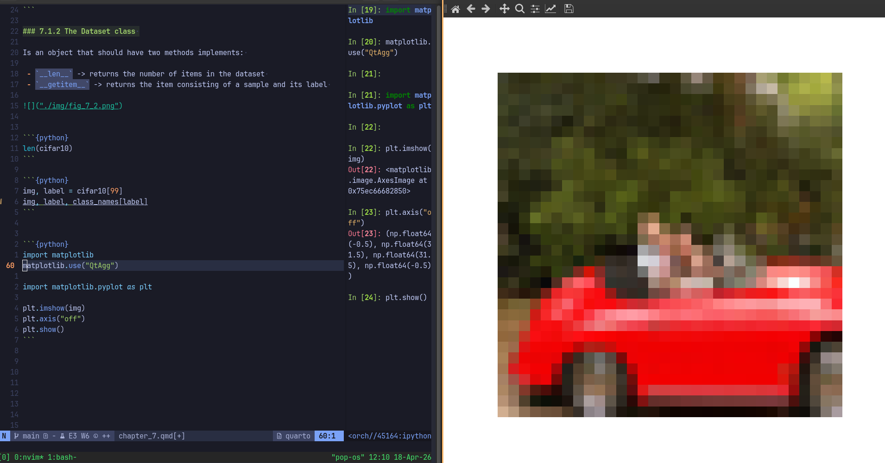
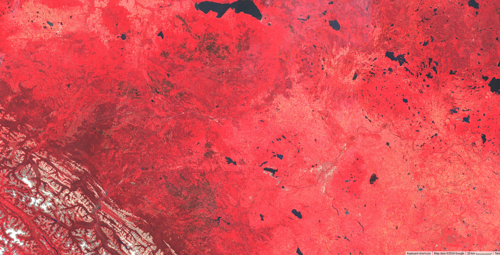
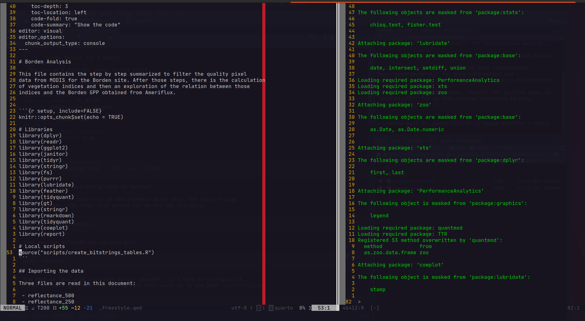
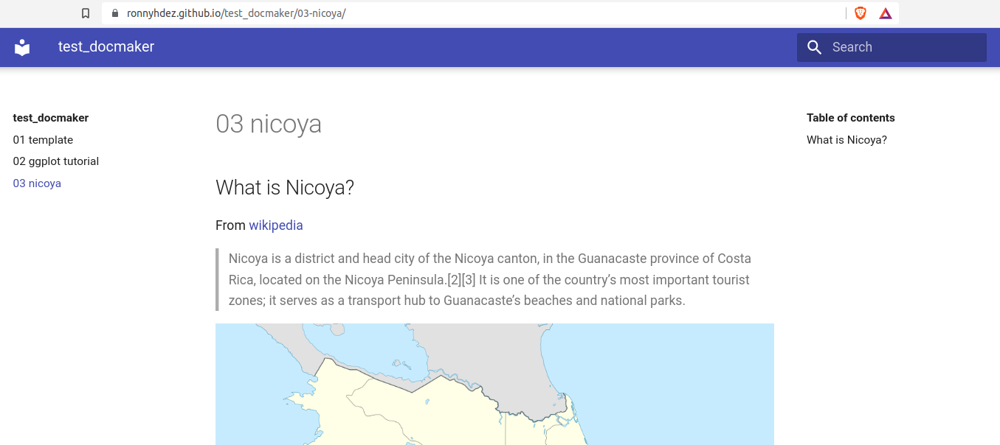
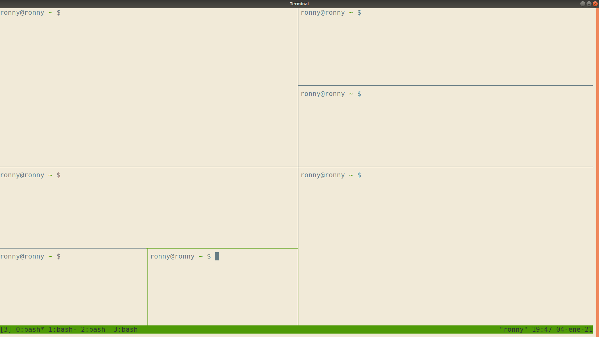
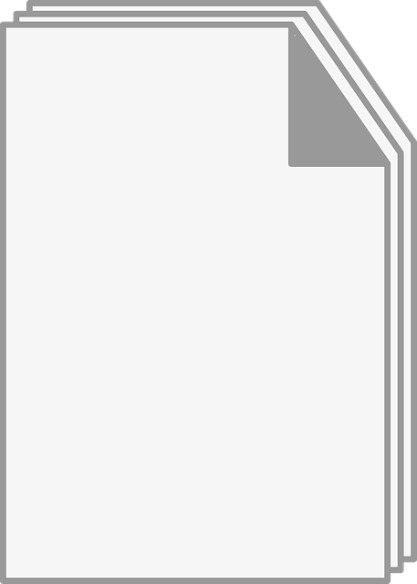

By Ronny A. Hernández Mora


A blogpost on how to configure nvim with Lua to work with R.
Notes on how to work with Neovim to use it as an IDE for R with the most used commands and functionalities.
A manual way to create the BibTex citations and export it to Zotero

Are you an R User who wants to try nvim?

A posible solution for note takers (and those who need to organize your documentation) with mkdocs and Rmarkdown.

Breves notas sobre el uso de tmux. Adecuado para mirar de manera rápida alguna instrucción que necesitemos para continuar con nuestro flujo de trabajo.
Vamos a “llevar a internet” nuestra aplicación y hacerla accesible al mundo.
Trabajar con fechas y tiempo en R es un poco complicado. En este post trato de explicar cómo trabajar con este tipo de datos y base R
Una breve intro a estructuras en R.
Una introducción al uso del API de datos abiertos de la muni de San José

Una introducción al control de versiones con git (otra más).